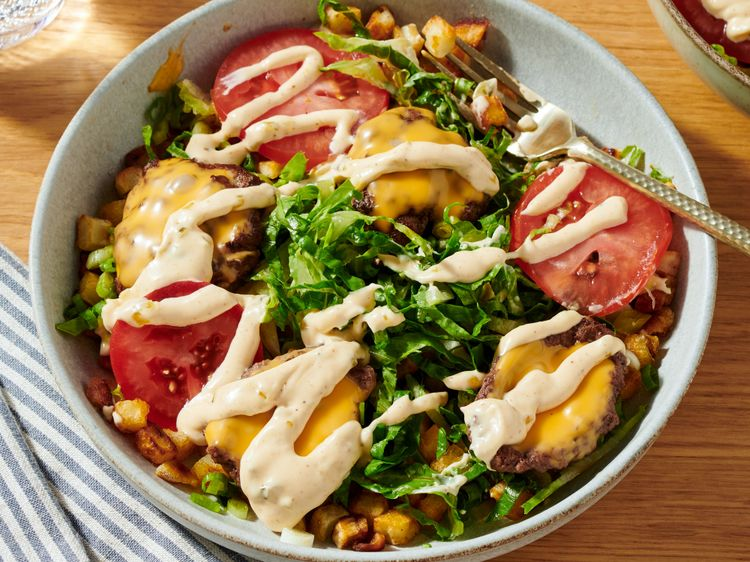

Smash Burger Bowl with Southern-Style Hash Browns
Home

These smash burger bowls have everything you love about a smash burger, minus the bun. Served on a bed of Southern-style hash browns with lettuce, tomato, and a quick burger sauce, they’re packed with flavor.
Ingredients
- Avocado oil
- 2 Cups of Frozen hash brown pototes
- 1 pound of fresh beef
- 4 slices of american cheese
- 1 roma tomato
- 4 cruchy lettuces
- 6 green onions
- burger sauce
Steps
- Add enough avocado oil to cover the bottom of a heavy skillet; heat over medium heat. Cook potatoes on all sides until golden brown and crispy, about 12 minutes. Remove and add to a paper towel-lined plate. Set aside and keep warm.
- For burgers, season meatballs with salt and pepper. Bring either the same skillet you cooked the potatoes in or another griddle to medium-high heat. Add meatballs. Using the back of a heavy spatula, smash each meatball into a patty, flipping regularly until well browned, about 5 minutes. You may have to work in batches
- Add a quartered slice of cheese to each patty, then briefly cover the skillet with a lid to melt the cheese. Set cooked patties aside when ready. Cover to keep warm while you cook the remaining patties.
- To assemble bowls, divide potatoes into 4 individual serving bowls. Divide lettuce and green onion evenly among the bowls. Top with tomato slices and burger patties. Drizzle with sauce.